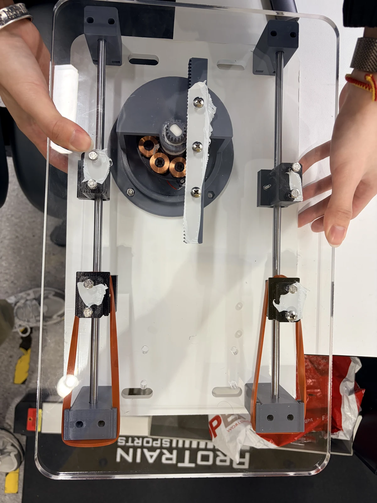
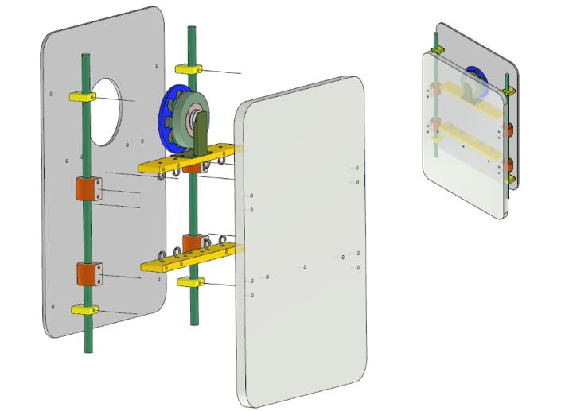
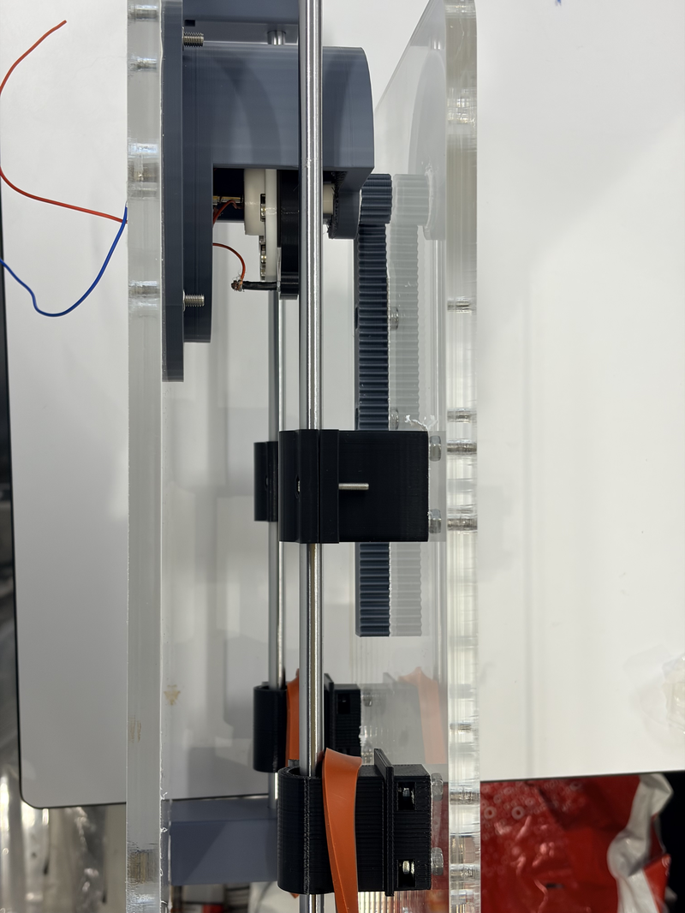

University of Auckland research prototype · Jul–Oct 2026
Energy-Harvesting Backpack
A backpack whose load moves up and down as you walk, and that motion turns a generator. Walking at 4 km/h, the prototype averaged 55 mW into a 3.3 kΩ load, above the project's 30–50 mW target, and 81 mW when hand-cranked.
My role: I joined the research group in July 2026 and took the suspended-load platform from CAD to a working, wearable prototype: mechanical design, laser cutting, 3D printing, welding the generator support and assembly. I also wired every coil on the generator and traced and fixed a wiring fault. The generator itself was provided by the research group; the platform, the coil wiring and the 21 October power test are mine.
Project snapshot
Average power into a 3.3 kΩ load while walking at 4 km/h with the backpack on. Hand-cranked: 81 mW.
SolidWorks CAD and mechanical design, laser cutting, 3D printing, welding, assembly, all generator coil wiring and electrical fault-finding.
Set-up, oscilloscope capture, treadmill runs and data analysis. Earlier shaker-table tests and the phone-charging and pulse-oximeter demonstrations were led by a doctoral researcher; I took part.
A bidirectional rotating generator with one magnet ring and one coil ring.
The load's vertical motion relative to the wearer is transmitted to the generator through a direct mechanical path.
University of Auckland, Department of Mechanical and Mechatronics Engineering research group.

How it works
- The rear plate is fixed to the backpack frame and follows the wearer's torso.
- The front plate carries the load and slides vertically on two guide rods.
- Walking makes the load plate move relative to the fixed frame.
- A rack on the moving plate drives a pinion coupled to the research group's generator.
- Elastic bands support the load in the current build, replacing an earlier spring layout.
What I did
Design and build
- Reviewed earlier student reports to separate the existing generator work from the new mechanical platform.
- Modelled a modular SolidWorks assembly around a fixed rear plate and a moving load plate.
- Designed and built the guide, rack, pinion and generator-mount interfaces.
- Prepared an exploded view, BOM, motion views and manufacturing layouts.
- Exported plate DXFs and laser-cut the acrylic plates, keeping a fixed mounting-hole pattern so the drive can be upgraded without recutting.
- 3D-printed parts, welded the generator support structure and assembled the platform.
- Wired every coil on the generator and brought them together to a single output.
- Allowed for printed-part clearance after a nominal 5 mm hole would not accept an M5 bolt.
- Took part in earlier shaker-table tests and the phone-charging and pulse-oximeter demonstrations, led by a doctoral researcher.
Working with others
I reviewed mechanism choices with my supervisor and previous students, then worked with technicians in several university labs and workshops on cutting, printing, assembly access and practical tolerances. Their feedback fed straight into the next CAD revision or test.
Fault-finding: no generator output
- Symptom. After assembly, the generator produced no output at the terminals.
- Method. The coils are wired together to one output, so a single break anywhere stops the whole circuit. I checked continuity with a multimeter, joint by joint along the coil chain.
- Cause. A coil lead had been worn through by friction against an internal contact surface.
- Result. After the repair, the output came back.
Power test, 21 October 2026
Walking at 4 km/h gave 55 mW against the project's 30–50 mW target. I set up, ran and analysed the test myself.
- Load. Generator output across a fixed 3.3 kΩ resistor.
- Capture. Every run recorded on a SIGLENT SDS1204X-E oscilloscope: hand-cranked, then worn on a treadmill at 4 and 5 km/h.
- Analysis. RMS voltage, power and energy calculated point by point from the raw samples, including every low point of the AC waveform.
On small screens, swipe the table to see all columns.
| Condition | Analysis window | RMS voltage | Average power | Energy in window |
|---|---|---|---|---|
| Hand-cranked | 10–50 s (40 s) | 16.34 V | 80.96 mW | 3.24 J |
| Worn on treadmill, 4 km/h | 15–105 s (90 s) | 13.49 V | 55.18 mW | 4.97 J |
| Worn on treadmill, 5 km/h | 15–105 s (90 s, mixed input) | 17.22 V | 89.86 mW | 8.09 J |
What the 5 km/h run showed
- About 205 mW averaged over the first 39 s during more vigorous movement. Contact with the end stops was suspected, but not confirmed.
- About 50 mW over 70 s once I deliberately calmed the movement, still at the top of the target range.
- About 105 mW averaged over the whole two-minute recording.
- Takeaway: how freely the load moves matters as much as walking speed.


The prototype in use


CAD and build




Next steps (Semester 1, 2027)
- Sweep the electrical load to find the resistance that extracts the most power.
- Tune the elastic-band stiffness so the load moves freely without hitting its end stops.
- Log payload mass, displacement and treadmill speed alongside the voltage, and repeat each speed.
- Measure the energy that reaches storage after rectification.
- Quantify efficiency, regulated USB output, comfort and long-term durability.